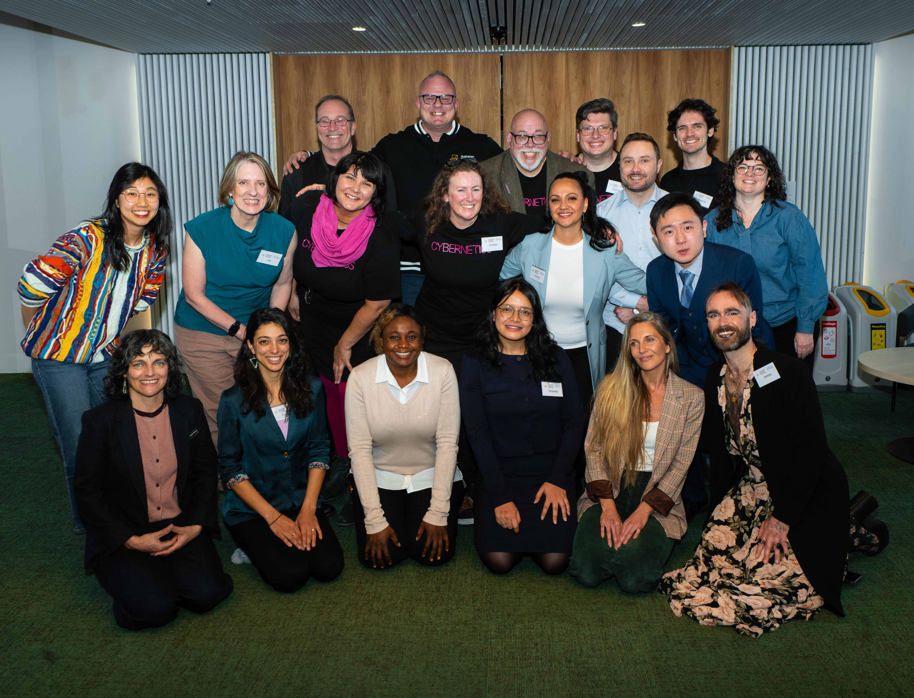
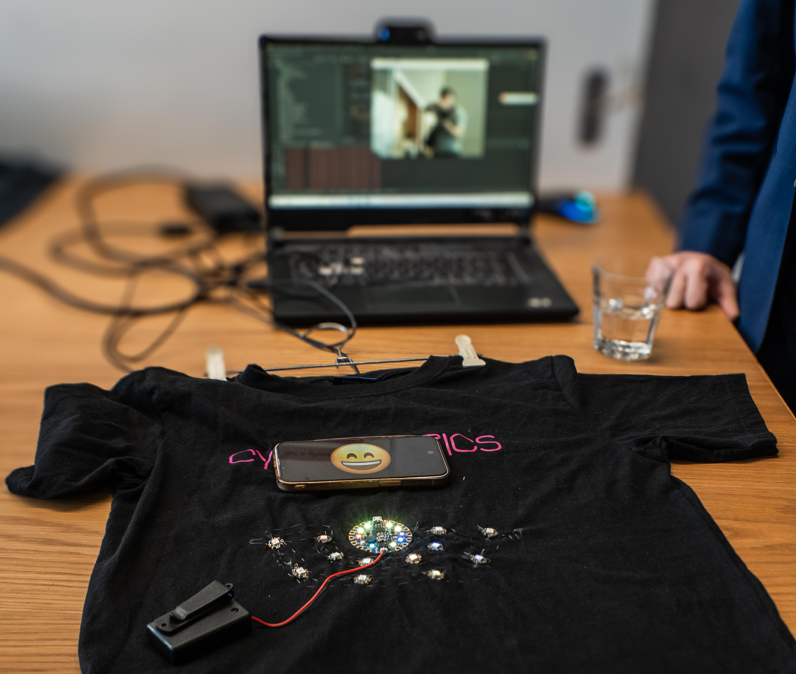
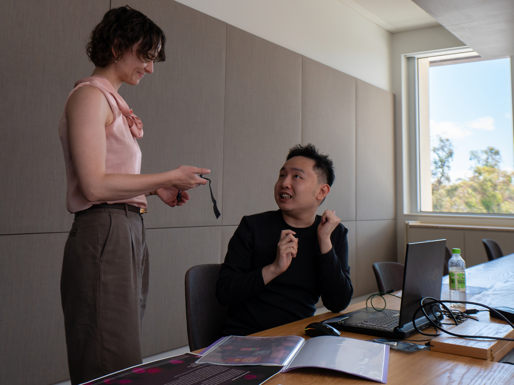

My journey into Cybernetics did not begin with a carefully designed research plan. It began, quite literally, with an accidental walk around campus.
Somewhere along that walk, I found myself near the School of Cybernetics, founded by Professor Genevieve Bell. A casual visit turned into an equally casual conversation, and that conversation introduced me to a way of thinking that felt very different from the disciplinary boundaries I had been used to.
Cybernetics invited people to think not only about technologies themselves, but also about their relationships with people, institutions, environments, and other systems. For someone whose academic journey had already wandered through economics, statistics, machine learning, and computing, this immediately felt strangely familiar.
Then came a slightly brave decision: I applied.
Somehow, that application turned into an offer — and an unexpectedly generous scholarship of AUD 790 per week, which was easily the largest scholarship support I had ever received in my life.
At that point, Cybernetics had certainly succeeded in getting my attention. (o°ω°o)
What began as an accident gradually became a turning point. I began to wonder whether this could be the place where many of the seemingly disconnected things I had learned before could finally speak to one another.

One of my favourite parts of studying at the School of Cybernetics was having opportunities to take ideas beyond assignments and put them in front of real people.
Across two Demo Days, I worked on two very different exhibition booths. The projects themselves had little in common at first glance, but both gave me something I had rarely experienced in conventional coursework: the opportunity to build something, stand beside it, and have people voluntarily walk over and ask me why it existed.

One of my Demo Day projects explored an emoji-inspired clothing concept. We experimented with the idea that clothing can communicate more than appearance — it can also become a playful interface through which emotions and personal expression are communicated to others.
It was deliberately playful, but that was also part of what made it interesting. A seemingly simple object could become a way of asking questions about expression, interaction, interpretation, and the relationship between people and their environments.
Expression · Interaction · Wearable Design
My other Demo Day booth moved in a very different direction. This project explored encrypted records of personal medical conditions, asking how important health information might remain available when needed while sensitive personal information is still protected.
The project encouraged us to think about privacy as more than a purely technical encryption problem. Who needs access? Under what circumstances? Who decides? And how should technical systems interact with the people whose information they are designed to protect?
Privacy · Health · Information GovernanceFor perhaps the first time, things I had made were no longer sitting quietly inside an assignment folder. People stopped at our booths, looked at what we had built, asked questions, challenged the ideas, shared their own thoughts, and genuinely listened to us explain why we had built them.
Turns out, having strangers voluntarily listen to you talk about your project is surprisingly addictive. (｀・ω・´)
As the program continued, the questions gradually became more serious.
Under the guidance of researchers at the School of Cybernetics, I began exploring complex systems not simply as collections of technical components, but as environments in which people, technologies, information, institutions, and behaviours continuously influence one another.
That perspective encouraged me to look again at many of the topics I had encountered before — machine learning, network science, information, human behaviour, and socio-technical systems — and ask how they might connect.
Somewhere along the way, asking "How does this system work?" slowly turned into asking "Could this actually become a research question?"
This exploration eventually led me toward the research direction I became most interested in and formed the foundation of my Master's thesis.
More importantly, the experience gave me enough confidence to believe that research was something I could at least seriously attempt — rather than something carried out only by people who already seemed to know exactly what they were doing.
It even gave me enough courage — perhaps slightly more courage than caution — to work with classmates on another research project and submit our work to AAAI 2027. The result is still pending, so Reviewer #2 may wish to reserve judgement for now.
My Master's research at the School of Cybernetics, exploring how misinformation can continue to be understood and observed within adaptive socio-technical communication environments.
Read the Thesis →A collaborative research project developed with classmates after my Cybernetics journey gave me enough confidence to try taking research beyond coursework and into an academic submission.
View the Paper →